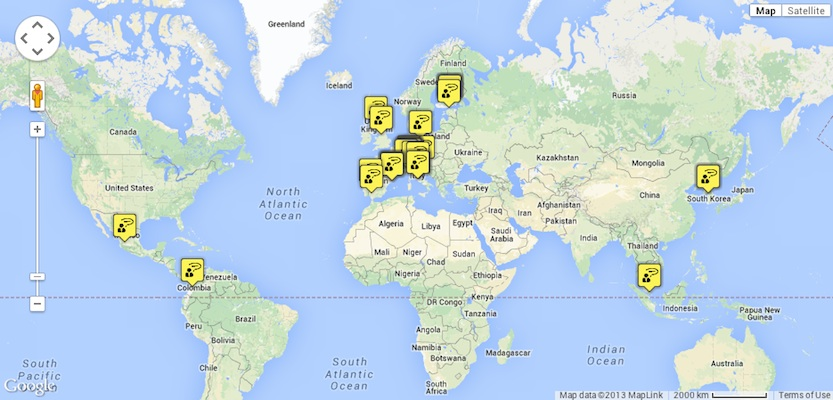
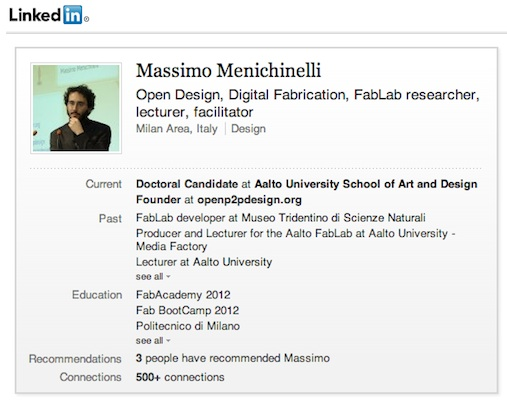
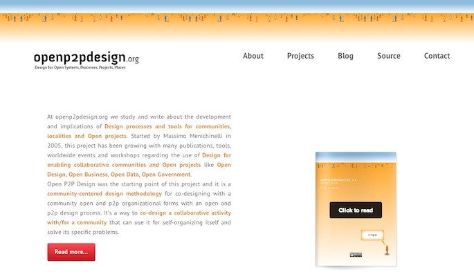
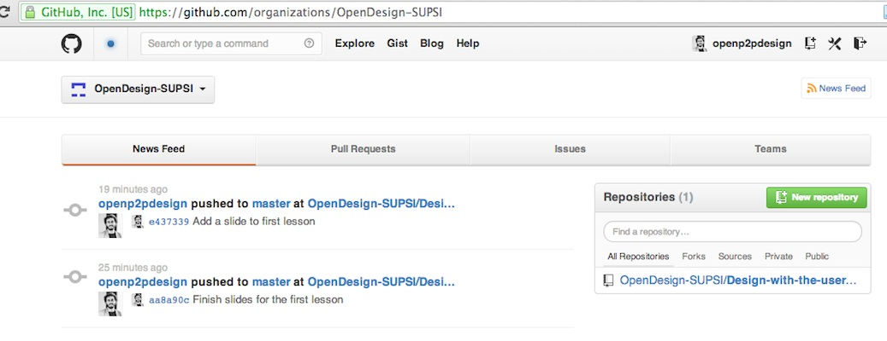
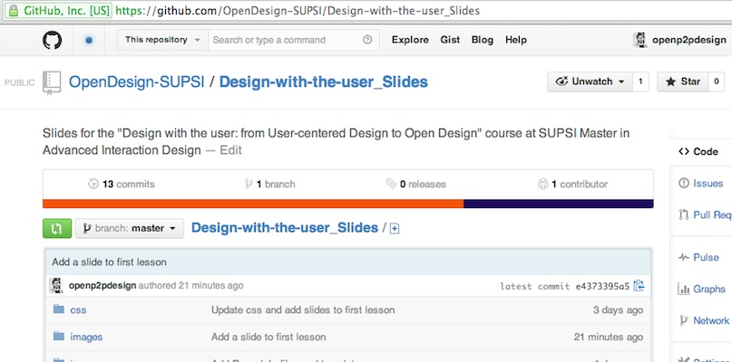
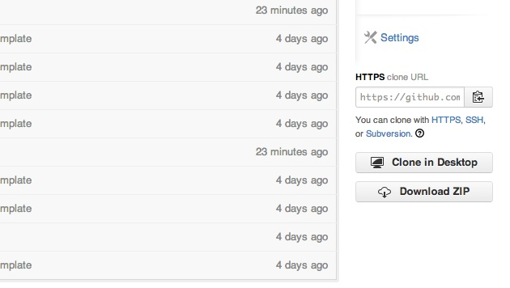

Design with the user
Introduction
About me...
- MSc in Industrial Design at Politecnico di Milano in 2006
- Doctoral Candidate at Aalto University since 2011
- Digital Fabrication & Open Design lecturer at Aalto University since 2012
- FabLab Developer, Open Design facilitator, ... since 2005
- ...
About me...
More about me...
More about me...
Source: http://www.openp2pdesign.org
Course structure
- 14/11: User-centered Design, User-experience design, Co-Design: methodologies and tools / Lead users, Open Innovation and Open Source
- 21/11: Open Design+Metadesign: concept and development / Intellectual property and design: laws and the design process
- 28/11: Digital Tools for Open projects: version control systems
- 5/12: Digital Tools for Open projects: version control systems
- 12/12: Practice: developing an Open project
- 19/19: Practice: developing an Open project
- Christmas holidays...
- 09/01: Examination
Where we will work together
Where to find the slides
Source: https://github.com/OpenDesign-SUPSI/Design-with-the-user_Slides
How to download the slides
Source: https://github.com/OpenDesign-SUPSI/Design-with-the-user_Slides/archive/master.zip
Contacts
Massimo Menichinelli / info@openp2pdesign.org / @openp2pdesign

This work is licensed under a Creative Commons Attribution 3.0 Unported License.
Massimo Menichinelli - 2013
openp2pdesign.org